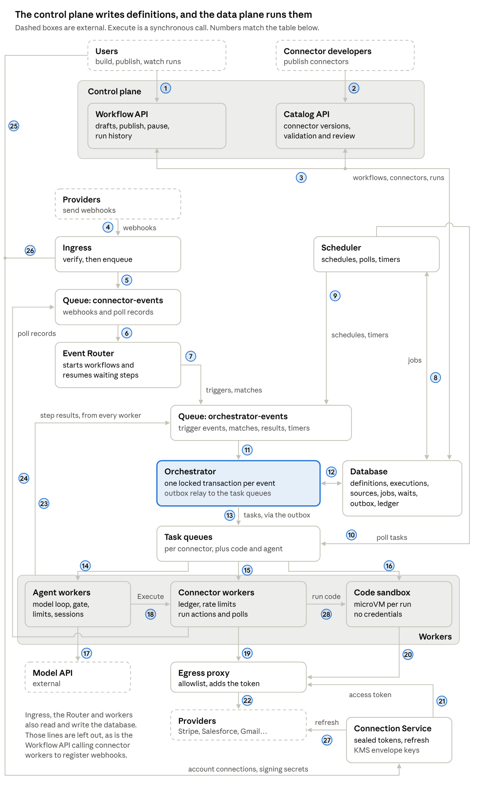
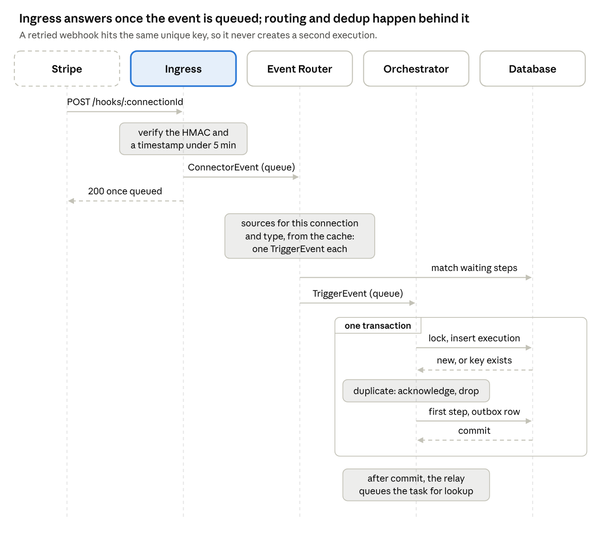
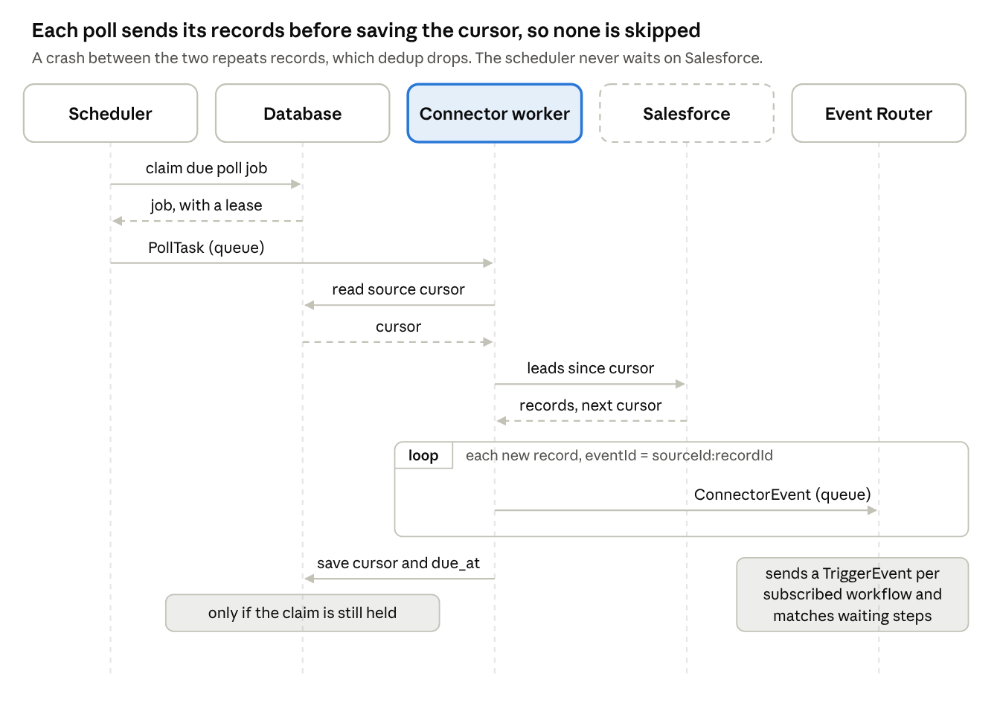
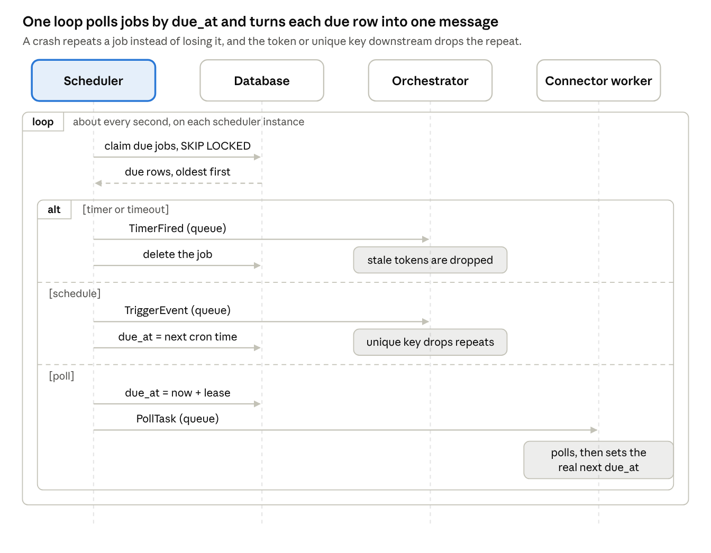
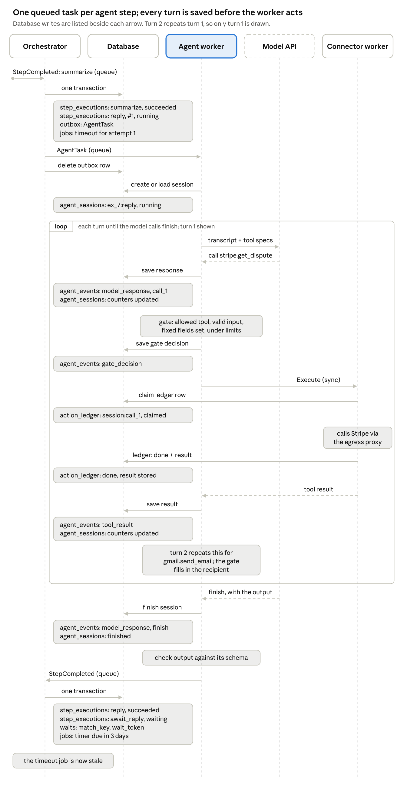

Workflow Automation Platform — Design Overview
· Gilad Raz
A control plane, the Workflow API and the Catalog API, is where workflows and connectors are defined. The data plane that runs them has five parts:
Intake brings events in. Ingress takes webhooks, connector workers run polls, and an Event Router decides which workflows start and which waiting steps resume.
A stateless Orchestrator advances each execution in one locked transaction per event.
Workers run actions, custom code and agents from queues.
A scheduler fires everything time-based: schedules, polls, delays, retries and timeouts.
The Connection Service holds the credentials, and an egress proxy adds them to outgoing requests.
A relational database is the source of truth, and message queues move the work. Users inspect every run from the same rows. Delivery is at least once everywhere, and unique keys make every repeat harmless.
Architecture

Each numbered arrow, what travels on it, and when:
| # | Arrow | What travels | When |
|---|---|---|---|
| 1 | Users → Workflow API | Edits, publishes, pauses, run-history views | Whenever a user builds, publishes or inspects a workflow |
| 2 | Connector developers → Catalog API | Connector versions: manifest and code bundle | When a developer publishes or updates a connector |
| 3 | Control plane ↔ Database | Writes definitions, subscriptions, sources and schedule jobs. Reads run history and the catalog | On publish, pause and delete, and on every editor or history page |
| 4 | Providers → Ingress | Webhook POSTs | When something happens at the provider, such as a new Stripe dispute |
| 5 | Ingress → connector-events | ConnectorEvent | Right after a webhook is verified |
| 6 | connector-events → Event Router | ConnectorEvent | Continuously, as the Router reads the queue |
| 7 | Event Router → orchestrator-events | TriggerEvent per subscribed workflow, EventMatched per waiting step | For each event that has subscribers or matches a wait |
| 8 | Scheduler ↔ Database | Claims due jobs rows, deletes fired timers, moves schedules and polls to their next due_at | About every second |
| 9 | Scheduler → orchestrator-events | TriggerEvent for schedules, TimerFired for timers and timeouts | When a schedule, delay, backoff, wait timeout or attempt deadline falls due |
| 10 | Scheduler → task queues | PollTask | When a poll job falls due |
| 11 | orchestrator-events → Orchestrator | Every event that moves an execution | Continuously |
| 12 | Orchestrator ↔ Database | One transaction per event: lock the execution, update steps, write waits, jobs and outbox rows | For every event it handles |
| 13 | Orchestrator → task queues | ActionTask, CodeTask, AgentTask, sent by the outbox relay | After the commit that starts or retries a step |
| 14 | Task queues → Agent workers | AgentTask | When an agent step starts or retries |
| 15 | Task queues → Connector workers | ActionTask, PollTask | When an app action starts or retries, or a poll is due |
| 16 | Task queues → Code sandbox | CodeTask | When a code step starts or retries |
| 17 | Agent workers → Model API | The transcript and tool specs | Each turn of the agent loop |
| 18 | Agent workers → Connector workers | Execute, a synchronous call | Each tool call that passes the gate |
| 19 | Connector workers → Egress proxy | Provider requests, tagged with their connection | Each action, poll and tool call |
| 20 | Code sandbox → Egress proxy | Plain HTTP requests from custom code | When custom code calls an external URL |
| 21 | Connection Service → Egress proxy | Access tokens | When the proxy needs a token that isn't cached |
| 22 | Egress proxy → Providers | Requests with credentials added, to allowed hosts only | Every outgoing provider call |
| 23 | Workers → orchestrator-events | StepCompleted, StepFailed | When an attempt finishes or fails |
| 24 | Connector workers → connector-events | ConnectorEvent per polled record | After a poll finds new records, before the cursor is saved |
| 25 | Users → Connection Service | The OAuth connect flow, listing and revoking accounts | When a user connects, reconnects or removes an account |
| 26 | Ingress → Connection Service | Requests for a connection's webhook signing secret | When a webhook arrives and the secret isn't cached |
| 27 | Connection Service → Providers | OAuth code exchange and token refresh | When an account is connected, and before a token expires |
| 28 | Connector workers → Code sandbox | A third-party connector's code bundle to run, as a synchronous call | When an action or poll belongs to a connector that ships code instead of templates |
Not drawn: at publish, the Workflow API calls the connector workers' Subscribe API synchronously to register a new webhook source (see Publishing and lifecycle).
The platform has two planes. In the control plane, people define things: users build and publish workflows through the Workflow API, and connector developers publish connectors through the Catalog API. Both are plain request-response services in front of the database. The data plane runs what was published. It reads definitions, sources and jobs from the database and never calls the control plane, so running workflows keep going while the control plane is down.
| Component | Plane | Job |
|---|---|---|
| Workflow API | Control | The editor's backend. Saves drafts, validates and publishes versions, creates subscriptions, sources and schedule jobs, pauses and deletes workflows, and serves the run history |
| Catalog API | Control | Connector developers publish connector versions here. It validates manifests, holds them for review, and serves the catalog to the editor |
| Ingress | Data | Verifies webhooks and puts each one on the connector-events queue. It does no routing. It gets each connection's signing secret from the Connection Service and caches it briefly |
| Event Router | Data | Turns each provider event, pushed or polled, into a TriggerEvent per subscribed workflow and an EventMatched per waiting step |
| Scheduler | Data | Fires anything time-based from one jobs table: cron schedules, timers (delays, waits, retries, timeouts), and poll tasks it hands to connector workers |
| Orchestrator | Data | Advances executions. It has no state of its own, and handles each event in one transaction |
| Connector workers | Data | Run actions, polls and webhook registration. They own rate limits and the idempotency ledger |
| Code sandbox | Data | Runs custom code and third-party connector code, in a microVM per run |
| Agent workers | Data | Run the agent loop: model, gate, tools, limits |
| Egress proxy | Data | The only way out to providers. Adds credentials and enforces each connector's allowed hosts |
| Connection Service | Both | The OAuth connect flow for users, access tokens for the egress proxy, and webhook signing secrets for Ingress. Stores tokens encrypted and refreshes them |
| Database | Both | The source of truth. An in-memory store holds only rate limits and counters, and object storage holds payloads over 256 KB |
The design is not tied to products. It needs a relational database with transactions, row locks, unique keys and SKIP LOCKED, such as Postgres or MySQL 8. It needs a message queue with at-least-once delivery, a visibility timeout that redelivers unacknowledged messages, and a dead-letter queue, such as SQS, RabbitMQ or Pub/Sub. The rest of the document says "the database" and "the queue".
Data model
A published version never changes, and every execution is pinned to one. Editing a workflow never alters a run that is already in progress.
-- definitions
workflows (id PRIMARY KEY, account_id, name, status, active_version) -- INDEX (account_id)
-- status: draft | active | paused | deleted
workflow_versions (workflow_id, version, definition json, published_at,
PRIMARY KEY (workflow_id, version)) -- immutable once published
sources (id PRIMARY KEY, connection_id, event_type, connector_major, kind, config json, config_hash,
cursor, token_hash,
UNIQUE (connection_id, event_type, connector_major, config_hash)) -- also serves the Router's lookup
-- kind: webhook | poll. event_type is namespaced, e.g. gmail.new_email
-- token_hash: catch hooks only, the hash of the URL token
subscriptions (source_id, workflow_id, version, step_id,
PRIMARY KEY (source_id, workflow_id, version, step_id)) -- INDEX (workflow_id)
-- step_id: "trigger" or a wait_event step
connections (id PRIMARY KEY, account_id, connector, sealed_tokens, sealed_webhook_secret, expires_at, status)
-- INDEX (account_id)
-- status: active | expired | broken | revoked
-- sealed_webhook_secret: the connection's webhook signing secret, issued by the provider
-- catalog
connectors (id PRIMARY KEY, owner_account, name)
connector_versions (connector_id, version, manifest json, bundle_hash, status,
PRIMARY KEY (connector_id, version)) -- version is semver
-- status: in_review | live | deprecated | retired
-- runtime
executions (id PRIMARY KEY, account_id, workflow_id, version, status, current_step, input json,
trigger_event_id, created_at, finished_at,
UNIQUE (workflow_id, trigger_event_id)) -- one execution per event
-- INDEX (workflow_id, created_at) for the run list; partitioned by created_at
-- status: running | waiting | succeeded | failed | filtered | cancelled
step_executions (execution_id, step_id, attempt, status, input, output, error, wait_token,
started_at, finished_at, PRIMARY KEY (execution_id, step_id, attempt))
-- status: running | waiting | succeeded | failed | timed_out | outcome_unknown | cancelled
waits (execution_id, step_id, wait_token, match_key, expires_at,
PRIMARY KEY (execution_id, step_id)) -- INDEX (match_key)
-- expires_at is for cleanup only: the timeout fires from a jobs row
jobs (id PRIMARY KEY, kind, due_at, payload json, claim_token) -- INDEX (due_at)
-- kind: schedule | poll | timer (delay, retry backoff, wait timeout) | timeout (attempt deadline)
-- schedule and poll jobs use a derived id, e.g. poll:<sourceId>, so they're found by key
outbox (id PRIMARY KEY, queue, body) -- messages committed with the state; increasing id, read in order
action_ledger (key PRIMARY KEY, status, result, owner, lease_until) -- one row per side effect
-- status: claimed | done | failed
agent_sessions (id PRIMARY KEY, execution_id, step_id, status, limits, counters, owner, lease_until) -- id is execution:step, kept across attempts
-- status: running | finished | limit_exceeded | failed
-- owner, lease_until: the one worker allowed to run it, renewed before every turn
agent_events (session_id, seq, at, kind, body, PRIMARY KEY (session_id, seq)) -- append-only
-- kind: model_response | gate_decision | tool_resultA source is something the platform listens to: one connection's event type, for one connector major version, with its config. A subscription says which workflow listens to it, either as its trigger or from a waiting step. Sources are shared, so many workflows listening to the same thing cost one webhook registration or one poll. A schedule needs no source: it is a row in jobs.
jobs holds everything that must happen at a set time: cron schedules, polls, timers (the end of a delay, a retry backoff or a wait) and attempt deadlines. Publishing and the Orchestrator create the rows. The scheduler polls the table by due_at and claims due rows with SKIP LOCKED. A fired timer or deadline is deleted, and a schedule or poll moves to its next due_at.
Tables: an example row, and who writes and reads it
| Table | Example row | Written by | Read by |
|---|---|---|---|
workflows: one row per workflow | { id: "wf_disputes", account_id: "acc_acme", name: "Handle Stripe disputes", status: "active", active_version: 7 } | Workflow API: create, publish, pause, delete | Workflow API, for the editor and the run list |
workflow_versions: the immutable definition of each published version | { workflow_id: "wf_disputes", version: 7, definition: { trigger: {…}, steps: […] }, published_at: "2026-10-18T09:00Z" } | Workflow API, once per publish | Orchestrator, to pick the next step and resolve inputs (cached, since a version never changes). Workflow API, to show it |
sources: what the platform listens to | { id: "src_9", connection_id: "conn_stripe", event_type: "stripe.charge.dispute.created", connector_major: 2, kind: "webhook", config: {}, config_hash: "e3b0c4…", cursor: null, token_hash: null } | Workflow API, which saves a source with its first subscriber, after the synchronous registration. Connector workers, which save the cursor after each poll | Event Router, to route events (from its cache). Connector workers, for a poll's config and cursor. Ingress, for a catch hook's token hash |
subscriptions: which workflow version listens to which source | { source_id: "src_9", workflow_id: "wf_disputes", version: 7, step_id: "trigger" } | Workflow API, on publish, pause and delete | Event Router, to fan out each event |
connections: each account's connected app login | { id: "conn_stripe", account_id: "acc_acme", connector: "stripe", sealed_tokens: "<encrypted>", sealed_webhook_secret: "<encrypted>", expires_at: "2026-10-18T10:00Z", status: "active" } | Connection Service: OAuth connect, token refresh, marking a connection broken | Connection Service, to give tokens to the egress proxy and signing secrets to Ingress. Workflow API, to list the connections a user can pick |
connectors: one row per connector in the catalog | { id: "stripe", owner_account: "acc_platform", name: "Stripe" } | Catalog API | Catalog API and Workflow API, to show the catalog |
connector_versions: each connector version | { connector_id: "stripe", version: "2.4.1", manifest: { auth: {…}, triggers: […], actions: […] }, bundle_hash: null, status: "live" } | Catalog API: publish, review, deprecate | Workflow API, to validate definitions. Connector workers, for templates, poll definitions and code. Event Router, for matchable fields. Agent workers, for tool specs |
executions: one row per run | { id: "ex_7", account_id: "acc_acme", workflow_id: "wf_disputes", version: 7, status: "waiting", current_step: "await_reply", input: { amount: 9000, email: "jo@shop.com" }, trigger_event_id: "stripe:evt_1Qx9", created_at: "2026-10-18T09:00:01Z", finished_at: null } | Orchestrator, under the row lock. The Workflow API takes the same lock to cancel runs or re-run a failed step | Orchestrator, locked for every event. Workflow API, for the run list |
step_executions: one row per step attempt | { execution_id: "ex_7", step_id: "lookup", attempt: 1, status: "succeeded", input: { email: "jo@shop.com" }, output: { contactId: "003Ab" }, error: null, wait_token: null, started_at: "…09:00:01Z", finished_at: "…09:00:02Z" } | Orchestrator, under the execution's lock | Orchestrator, for the expected-state check and for templates over earlier outputs. Workflow API, for the run timeline |
waits: steps waiting for an outside event | { execution_id: "ex_7", step_id: "await_reply", wait_token: "wt_41", match_key: "7f3a91…", expires_at: "2026-10-21T09:05Z" } | Orchestrator: inserts when a step parks, deletes on a match, a timeout or a cancel | Event Router, through the match_key index |
jobs: everything due at a set time | { id: "j_88", kind: "timer", due_at: "2026-10-21T09:05Z", payload: { executionId: "ex_7", stepId: "await_reply", waitToken: "wt_41" }, claim_token: null } | Workflow API (schedule and poll rows). Orchestrator (timers and timeouts). Scheduler (claims, deletes, next due_at). Connector workers (next due_at after a poll, under the claim token) | Scheduler, by due_at |
outbox: messages committed with a state change | { id: 10452, queue: "tasks.agent", body: { type: "AgentTask", executionId: "ex_7", stepId: "reply", … } } | Orchestrator inserts. The outbox relay deletes after sending | Outbox relay |
action_ledger: one row per side effect | { key: "ex_7:lookup", status: "done", result: { contactId: "003Ab" }, owner: "worker-12", lease_until: "…09:00:31Z" } | Connector workers | Connector workers, before every provider call |
agent_sessions: one row per agent step | { id: "ex_7:reply", execution_id: "ex_7", step_id: "reply", status: "finished", limits: { turns: 10, toolCalls: 5 }, counters: { turns: 3, toolCalls: 2, tokens: 4120 }, owner: "agent-w-3", lease_until: "…09:07:00Z" } | Agent workers | Agent workers, to resume a session and enforce limits. Workflow API, for run history |
agent_events: the append-only agent log | { session_id: "ex_7:reply", seq: 5, at: "…09:05:04Z", kind: "gate_decision", body: { callId: "call_2", decision: "allowed", overridden: ["to"] } } | Agent workers | Agent workers, to rebuild the transcript each turn. Workflow API, for the agent transcript in run history |
Two stores sit beside the database. The in-memory store holds rate-limit buckets and per-account counters, used by connector workers, agent workers and the Orchestrator. Object storage holds payloads over 256 KB, which rows and messages reference.
Publishing and lifecycle. The Workflow API publishes: it creates a new version and points its subscriptions at it. The first subscriber creates a source. A poll source gets a poll job. A new webhook source is registered before the commit. The Workflow API calls the connector workers' Subscribe API synchronously, a connector worker registers the webhook with the provider. Only then is the source saved, live, in the same transaction as the version. If the provider refuses or doesn't answer within 10 seconds, nothing is published and the author sees the error, such as a missing permission. The control plane still never calls a provider: a connector worker does. A source goes away once no workflow and no waiting step uses it. The poll cursor lives on the source, so a new version sees nothing twice. New events start on the new version, and running executions finish on theirs. Pausing a workflow stops new events (webhooks are acknowledged and logged) but lets running executions finish. Deleting it also cancels them: waiting steps are closed, so their timers carry stale tokens and are dropped.
A definition is a small graph of typed steps. Inputs are templates over the trigger and earlier outputs. This example handles a new Stripe dispute, and the flows below use it:
{
"trigger": { "kind": "webhook", "connector": "stripe@2", "event": "charge.dispute.created", "next": "lookup" },
"steps": [
{ "id": "lookup", "name": "Find the customer", "type": "action", "kind": "app",
"action": "salesforce.find_contact@3", "input": { "email": "{{trigger.email}}" },
"timeout": "PT30S", "retry": { "max": 3 }, "onError": "fail", "next": "route" },
{ "id": "route", "name": "Large dispute?", "type": "decision", "kind": "branch",
"branches": [ { "if": "trigger.amount >= 50000", "next": "notify" } ], "default": "wait_1d" },
{ "id": "notify", "name": "Alert the team", "type": "action", "kind": "app",
"action": "slack.post_message@1", "input": { "…": "…" }, "next": null },
{ "id": "wait_1d", "name": "Wait a day", "type": "decision", "kind": "delay", "duration": "P1D", "next": "summarize" },
{ "id": "summarize", "name": "Summarize the dispute", "type": "action", "kind": "code",
"bundle": "sha256:c41e…", "next": "reply" },
{ "id": "reply", "name": "Email the customer", "type": "action", "kind": "agent",
"goal": "Email the customer about the dispute", "tools": [ "stripe.get_dispute@2", "gmail.send_email@2" ],
"output": { "threadId": "string" }, "next": "await_reply" },
{ "id": "await_reply", "name": "Wait for a reply", "type": "decision", "kind": "wait_event",
"event": "gmail.new_email", "match": { "threadId": "{{steps.reply.output.threadId}}" },
"timeout": "P3D", "next": null, "onTimeout": "escalate" },
{ "id": "escalate", "name": "Escalate to the team", "type": "action", "kind": "app",
"action": "slack.post_message@1", "input": { "…": "…" }, "next": null }
]
}Each action names a connector major version (@3), so a breaking change in the catalog never reaches a published workflow. Each connector step also names the connection it uses, left out here for brevity.
A workflow has the brief's three component types. The trigger starts it, and every step is a decision or an action:
| Type | Kinds | What it does |
|---|---|---|
| Trigger | webhook, poll, schedule | Starts an execution |
| Decision | filter, branch, delay, wait_event | Controls the path: ends the run, picks a branch, or pauses until a time or an event |
| Action | app, code, agent | Does work and produces output for later steps. A formatter is a built-in app action |
Steps are an array. Each step has a stable id, which next, branches and templates refer to, and a name shown in the editor, so renaming a step breaks nothing. An action's onError is fail, continue, or the id of a handler step.
The four decision kinds:
filterhas one condition. When it's false, the run ends asfiltered, which is not a failure and raises no alert.branchis a list of branches tried in order, plus adefault. One branch with a default is if / else, as inroute. Several branches give the brief's path by country.delaypauses the run for a duration or until a time.wait_eventpauses the run until a matching event arrives, or a timeout.
Filters and branches are evaluated inline by the Orchestrator. Delays and waits park the execution (below). Publishing rejects a definition with a duplicate id, a cycle, a missing step, or a template that doesn't match an earlier step's output schema, so the inline decision loop always ends.
How an execution runs
The Orchestrator is stateless. It takes one event at a time from the orchestrator-events queue and handles it in one database transaction that locks the execution row. Two events for the same execution therefore never interleave, and a crash anywhere before the commit leaves nothing half-written.
def handle(event): # TriggerEvent, StepCompleted, StepFailed, EventMatched or TimerFired
with db.transaction():
ex = lock_execution(event) # SELECT … FOR UPDATE. A TriggerEvent inserts it first, unless the unique key exists
if is_duplicate_or_stale(ex, event):
return # wrong attempt or wait_token: acknowledge and drop
step = record(ex, event) # update step_executions, then return what runs next:
# the next step, a retry of this one, or its onError / onTimeout step
while step and step.kind in ("filter", "branch"):
step = evaluate(step, ex) # inline: no task, no extra hop. A false filter ends the run
if step is None:
finish(ex) # succeeded, filtered or failed
elif step.waits: # a delay or wait_event decision, or a retry's backoff
park(ex, step)
else: # an action: app, code or agent
insert_outbox(queue_for(step), task(ex, step))
insert_job("timeout", due_at=now() + step.timeout) # stale, and dropped, if the result comes first
# after commit: the outbox relay sends the task to its queue and deletes the row
def park(ex, step):
token = mark_waiting(ex, step) # status waiting, new wait_token
insert_job("timer", due_at=step.wake_at, wait_token=token) # end of the delay, the backoff or the wait
if step.match_key: # a wait_event decision
insert_wait(ex, step, step.match_key, token)| Step | Runs where | How the execution continues |
|---|---|---|
Action: app | A connector worker | Its StepCompleted event, or StepFailed |
Action: code | The code sandbox | Its StepCompleted event, or StepFailed |
Action: agent | An agent worker | Its StepCompleted event, or StepFailed |
Decision: filter, branch | Inline, inside the Orchestrator's transaction | Straight away, in the same transaction |
Decision: delay | A timer row in jobs, fired by the scheduler | A TimerFired event |
Decision: wait_event | A row in waits, plus a timeout timer in jobs | An EventMatched event, or TimerFired on timeout |
The outbox is why state and messages can't diverge. The task is inserted as a row in the same transaction as the state change. A relay loop sends outbox rows to their queues and deletes them afterwards. If the relay crashes after sending but before deleting, the row is sent again, and the duplicate is harmless (see Reliability).
A failed attempt is retried with exponential backoff and jitter, each retry a timer job, up to the step's retry.max. Every attempt also gets a timeout job, so a lost task fails instead of hanging. After the last attempt, the step's onError setting decides what happens: fail the execution, continue, or go to a handler step. Parallel branches are left out of this design. They would need only a join counter on the execution row.
Messages: every event, who produces and consumes it, and its payload
Components talk through three kinds of queue, plus one synchronous call. Every message carries the same envelope, for example { messageId: "m_5512", accountId: "acc_acme", traceId: "tr_9a1", sentAt: "2026-10-18T09:00:00.120Z" }. The accountId drives per-account quotas, and the traceId ties a run together in the execution history. A payload over 256 KB travels as a reference to object storage. The examples below follow the doc's dispute workflow. The idempotency key column says what the consumer checks so that a repeated message changes nothing. The envelope's messageId is for logs only, not for deduplication.
connector-events: raw provider events, read by the Event Router
| Message | Produced by, and when | Consumed by, to do what | Idempotency key | Example |
|---|---|---|---|---|
ConnectorEvent from a webhook | Ingress, right after it verifies the webhook and before it replies 200 | Event Router: finds the sources for this connection and type, sends a TriggerEvent per subscribed workflow, and matches waiting steps | Yes: eventId, the provider's event id, or a hash of the payload. The Router keeps no state, so it simply handles a repeat again. The key is checked downstream, by the Orchestrator's unique key and the wait token | { connectionId: "conn_stripe", type: "stripe.charge.dispute.created", eventId: "stripe:evt_1Qx9", payload: { amount: 9000, email: "jo@shop.com" } } |
ConnectorEvent from a poll | A connector worker, once per new record a poll finds, before it saves the cursor | Event Router: the same, but only for this one source | Yes: eventId = sourceId:recordId, plus :updatedAt for an "updated record" source. Checked downstream, the same way | { sourceId: "src_1", eventId: "src_1:lead_101", payload: { leadId: "lead_101", email: "kim@acme.com" } } |
orchestrator-events: everything that moves an execution, read by the Orchestrator
| Message | Produced by, and when | Consumed by, to do what | Idempotency key | Example |
|---|---|---|---|---|
TriggerEvent | The Event Router, once per subscribed workflow for each ConnectorEvent. The scheduler, when a cron schedule falls due | Orchestrator: creates the execution unless the unique key exists or the workflow is no longer active, and starts the first step | Yes: (workflowId, eventId), the unique key on executions. A repeat inserts nothing | { workflowId: "wf_disputes", version: 7, eventId: "stripe:evt_1Qx9", payload: { amount: 9000, email: "jo@shop.com" } }. A schedule's eventId is jobId:scheduledTime, such as "schedule:wf_A:2026-10-19T09:00" |
EventMatched | The Event Router, when an event's match key hits a waits row | Orchestrator: if the token still matches, stores the payload as the step's output and moves on | Yes: waitToken. Applied only while the step is waiting with that token. The first copy replaces it | { executionId: "ex_7", stepId: "await_reply", waitToken: "wt_41", payload: { threadId: "t_123", from: "jo@shop.com", body: "…" } } |
TimerFired | The scheduler, when a jobs row of kind timer or timeout falls due | Orchestrator: ends a delay, retries after a backoff, times out a wait, or fails an attempt that ran too long | Yes: waitToken for a timer, (executionId, stepId, attempt) for an attempt timeout | Timer: { executionId: "ex_7", stepId: "await_reply", kind: "timer", waitToken: "wt_41" }. Attempt timeout: { executionId: "ex_7", stepId: "lookup", kind: "timeout", attempt: 1 } |
StepCompleted | A connector worker, the code sandbox or an agent worker, when an attempt succeeds | Orchestrator: records the output and starts the next step | Yes: (executionId, stepId, attempt). Applied only while the step is running with that attempt | { executionId: "ex_7", stepId: "lookup", attempt: 1, output: { contactId: "003Ab" } } |
StepFailed | Any worker, when an attempt fails | Orchestrator: schedules a retry, or follows the step's onError | Yes: (executionId, stepId, attempt), the same rule | { executionId: "ex_7", stepId: "lookup", attempt: 1, error: { code: "provider_error", message: "Service unavailable", providerStatus: 503, retryable: true, outcomeUnknown: false } } |
Task queues: work for the workers
ActionTask and PollTask go to the connector's queue, CodeTask to the code queue, and AgentTask to the agent queue.
| Message | Produced by, and when | Consumed by, to do what | Idempotency key | Example |
|---|---|---|---|---|
ActionTask | The Orchestrator, through the outbox, when an app action starts or retries | Connector worker: claims the ledger row, calls the provider through the egress proxy, then sends StepCompleted or StepFailed | Yes: the ledger key executionId:stepId, computed by the worker and the same for every attempt. Also sent to the provider as its idempotency key where it supports one | { executionId: "ex_7", stepId: "lookup", attempt: 1, action: "salesforce.find_contact@3", connectionId: "conn_sf", input: { email: "jo@shop.com" }, deadline: "2026-10-18T09:00:31Z" } |
CodeTask | The Orchestrator, through the outbox, when a code action starts or retries | Code sandbox: runs the bundle in a fresh microVM, then sends StepCompleted or StepFailed | No. A repeat runs the code again. Only its result is deduplicated, by the attempt check. The code gets executionId:stepId to pass to any API it calls | { executionId: "ex_7", stepId: "summarize", attempt: 1, bundleHash: "sha256:c41e…", input: { dispute: {…} }, limits: { cpu: 1, memoryMb: 256, timeout: "PT30S" } } |
AgentTask | The Orchestrator, through the outbox, when an agent action starts or retries | Agent worker: creates or loads the session, runs the loop until finish, then sends StepCompleted or StepFailed | Yes: the session id executionId:stepId. A repeat resumes the same session instead of starting over. Each tool call also has its own ledger key (see Execute below) | { executionId: "ex_7", stepId: "reply", attempt: 1, goal: "Email the customer about the dispute", input: {…}, tools: [ { action: "gmail.send_email@2", connectionId: "conn_gmail", fixed: { to: "jo@shop.com" } } ], limits: { turns: 10, toolCalls: 5 }, outputSchema: { threadId: "string" } } |
PollTask | The scheduler, when a poll source's job falls due | Connector worker: polls the provider, sends a ConnectorEvent per new record, then saves the cursor if it still holds the claim | Yes: claimToken. Only the latest claim can save the cursor. Repeated records are deduplicated later, by their eventId | { sourceId: "src_1", claimToken: "ct_81" } |
A message that keeps failing moves to its queue's dead-letter queue after N deliveries, and the step fails visibly.
Two calls are synchronous rather than queued, both to the connector workers:
Execute, from agent workers, for each tool call that passes the gate. The next model turn needs the result. Idempotency key: yes, the ledger key sessionId:callId, so a repeated call returns the stored result instead of running the tool again. Example:{ sessionId: "ex_7:reply", callId: "call_2", action: "gmail.send_email@2", connectionId: "conn_gmail", input: { to: "jo@shop.com", subject: "Your dispute", body: "…" } }.Subscribe, from the Workflow API, during publish, before a new webhook source is saved. The author is waiting to see whether the workflow is live. Idempotency key: partly. The new source's id is sent to the provider as its idempotency key where it supports one. Example:{ sourceId: "src_9", operation: "subscribe" }, which returns success, or the provider's error. If it fails or takes longer than 10 seconds, nothing is published.
Flows: how executions start, wait and continue
Publishing: a new version goes live
Nothing is saved until every check and every webhook registration has succeeded, and executions that are already running are never touched.
| # | Who | What happens | Database |
|---|---|---|---|
| 1 | Author → Workflow API | Clicks Publish, and the editor sends the definition | — |
| 2 | Workflow API | Validates: step ids are unique, with no cycles or missing steps; every connector@major exists and is live; every template matches an earlier step's output schema; every wait_event match field is matchable; every connection belongs to the account and is active; limits are within the plan. Any failure stops here, and nothing is saved | Reads connector_versions, connections, sources |
| 3 | Workflow API | Builds each code action into a bundle and stores it under its hash | Writes object storage |
| 4 | Workflow API → connector worker | For each new webhook source, calls Subscribe synchronously. The connector worker registers the webhook with the provider through the egress proxy. A refusal, or no answer within 10 seconds, stops publishing and shows the error | — |
| 5 | Workflow API | One transaction: inserts the version and makes it active; finds or inserts each source, and a new poll source gets a poll job due now; inserts or updates a schedule trigger's schedule job; inserts the new version's subscriptions, deletes the old version's trigger subscription, and keeps old wait_event subscriptions that still have waiting runs | Writes workflow_versions, workflows, sources, jobs, subscriptions |
| 6 | Workflow API → Event Routers | Sends a cache invalidation for the affected connections | — |
| 7 | Workflow API → author | Shows Published and live | — |
From then on, new events start the new version, and executions already running finish on the version they started with. When the old version's last waiting run ends, its remaining subscriptions are removed, and a source that nothing uses any more is deleted.
Webhook: a provider sends an event and a workflow starts
| # | Who | What happens | Database |
|---|---|---|---|
| 1 | Stripe | A customer opens a dispute, and Stripe POSTs charge.dispute.created to /hooks/{connectionId}. Every connection has its own webhook URL. Connection ids are random, so URLs can't be guessed | — |
| 2 | Ingress | Takes the connection id from the URL, gets that connection's signing secret, and checks the HMAC signature, with the timestamp no more than 5 minutes old | Reads connections, through the Connection Service (cached) |
| 3 | Ingress | Sends ConnectorEvent { connectionId, type, eventId: "stripe:evt_1Qx9", payload } to connector-events, and replies 200 only after the queue accepts. If the queue is unavailable it replies 5xx, and Stripe retries | — |
| 4 | Event Router | Finds the sources for this connection and event type, applies each source's config, and finds their subscribers. If a source has wait subscribers, it also matches waiting steps | Reads sources, subscriptions (cached), waits |
| 5 | Event Router | Sends TriggerEvent { workflowId: wf_disputes, version: 7, eventId: "stripe:evt_1Qx9", payload } per subscribed workflow | — |
| 6 | Orchestrator | In one transaction: inserts the execution, unless (workflow_id, trigger_event_id) already exists, which means a retried webhook, so it stops. Records the first step, lookup, queues its task and adds a timeout | Writes executions, step_executions, outbox, jobs |
| 7 | Outbox relay | Sends ActionTask { ex_7, lookup, salesforce.find_contact@3, … } to the connector's queue | Deletes the outbox row |
| 8 | Connector worker | Claims the ledger row, calls Salesforce through the egress proxy, and sends StepCompleted | Writes action_ledger |
| 9 | Orchestrator | Records the result and moves to the next step, route. The run is under way | Writes step_executions |

Ingress does no routing, so it answers fast and absorbs bursts in the queue. The Router keeps a cache from connection and event type to that pair's sources and their subscriptions, and applies each source's config, such as a label filter, to the payload. After each publish, pause or delete, the Workflow API sends an invalidation naming the connection, and every Router instance drops that entry. A 30-second expiry covers a lost message. A paused workflow that still gets an event in that window is harmless, because the Orchestrator checks the workflow's status before starting a run. Three more details:
The first subscriber of a webhook source has the Workflow API call the connector workers synchronously to run the connector's
subscribehook.A generic catch hook, like a website form posting a lead, has no signature to check. Its URL carries a random 128-bit token instead, which the user can rotate. Ingress compares the token's hash with the one stored on the source.
A provider that sends no event id gets
eventId = hash(payload), so an exact retry still dedups.
Polling: the platform finds a new record and starts a workflow
| # | Who | What happens | Database |
|---|---|---|---|
| 1 | Scheduler | Its every-second query finds poll:src_1 due. It claims the row with SKIP LOCKED, sets claim_token = ct_81, and moves due_at forward by a short lease | Reads and writes jobs |
| 2 | Scheduler | Sends PollTask { sourceId: src_1, claimToken: ct_81 } to the connector's task queue, and never waits on the provider | — |
| 3 | Connector worker | Reads the source's cursor and asks the provider for new records since it, minus a short look-back, through the egress proxy | Reads sources |
| 4 | Connector worker | Sends a ConnectorEvent per new record, with eventId = sourceId:recordId, or sourceId:recordId:updatedAt for an "updated record" source | — |
| 5 | Connector worker | Saves the new cursor and the next due_at, but only if it still holds ct_81 | Writes sources, jobs |
| 6 | Event Router | For each record, finds src_1's subscribers and sends a TriggerEvent per subscribed workflow, and matches any waiting steps | Reads subscriptions (cached), waits |
| 7 | Orchestrator | Creates the execution unless (workflow_id, eventId) already exists, records the first step, and queues its task | Writes executions, step_executions, outbox, jobs |
| 8 | Outbox relay → worker | The first step's task goes out and runs | Deletes the outbox row |

Events go out before the cursor moves. So a crash repeats records, which dedup drops, but never skips one. Each poll also re-reads a short window before the cursor, to catch records the provider saved late.
Because sources are shared, 50 workflows watching new leads in one Salesforce org subscribe to one source and cost one poll.
Schedule: a configured time is reached
Each schedule trigger is a cron row in
jobs. Itsdue_atis the next fire time in the user's time zone, plus a few seconds of jitter.The scheduler claims due rows the same way it claims polls.
It sends
TriggerEvent { workflowId, eventId: jobId:scheduledTime }. The key is the scheduled time, not the clock, so a scheduler that dies after sending and fires again creates no second execution.It computes the next fire time and saves it as
due_at, still under the claim.
The scheduler fires every kind of job in the same loop. Schedules and timers go to the Orchestrator, and polls go to a connector worker:

If the scheduler was down past a fire time, the row is just overdue, and it fires once when claimed. Missed intervals are not replayed.
Delay and branch: decide, wait, then continue on the right path
lookupfinishes, and itsStepCompletedreaches the Orchestrator.In the same transaction, the Orchestrator evaluates
route. The amount is 9,000, below 50,000, so no branch matches and thedefault,wait_1d, is next. It markswait_1daswaitingwith a freshwait_token, and inserts a timer job due in 24 hours.For 24 hours nothing runs. The execution is only rows.
The scheduler claims the due timer, sends
TimerFired { executionId, stepId, kind: "timer", waitToken }, and deletes the job.The Orchestrator checks that the step is still
waitingwith that token. It then completes the delay and writes the task forsummarize. A duplicate or staleTimerFiredfails the check and is dropped.
Wait for an event: pause until something happens outside, or give up
In the example, await_reply waits up to three days for the customer to answer the email the agent sent. If nobody answers, the team is told in Slack. Publishing subscribed await_reply to the Gmail new-email source of that connection, the same way a trigger subscribes. The reply is therefore received even though no trigger listens to Gmail.
| # | Who | What happens | Database |
|---|---|---|---|
| 1 | Orchestrator | reply completes with the threadId of the email it sent. In one transaction, it marks await_reply as waiting with token wt_41, inserts the wait with match_key = hash("gmail.new_email", conn_gmail, "threadId=t_123"), and inserts a timer due in 3 days | Writes step_executions, waits, jobs |
| 2 | — | Nothing runs while it waits. The execution is only rows | — |
| 3 | Gmail → Ingress | The customer replies. Gmail pushes to /hooks/conn_gmail. Ingress checks the signature and sends a ConnectorEvent | Reads the signing secret (cached) |
| 4 | Event Router | Finds the Gmail source and its subscribers. await_reply is a wait subscriber, so it computes the match key from the event's threadId | Reads sources, subscriptions (cached) |
| 5 | Event Router | Looks the key up and sends EventMatched { executionId: ex_7, stepId: await_reply, waitToken: wt_41, payload } | Reads waits |
| 6 | Orchestrator | Locks ex_7. The step is still waiting with wt_41, so it saves the reply as the step's output, deletes the wait, and moves on. next is null, so the run succeeds | Writes step_executions, waits, executions |
| 7 | Scheduler | Later, the 3-day timer fires with wt_41. The step is no longer waiting, so it's dropped | Deletes the jobs row |
| — | If no reply comes | The timer fires first. The step becomes timed_out and follows onTimeout to escalate. A reply that arrives later fails the token check | Writes step_executions |
Reply and timeout together. Both are applied under the execution's row lock, so exactly one of them wins.
Known limit: an event before the wait exists is missed. The wait row is written when the Orchestrator applies reply's result, a moment after the email went out. An event in that gap, usually a second or less, finds no wait, and the step later times out. A customer is very unlikely to answer that fast. The likely case is an instant auto-reply, which shouldn't resolve the wait anyway.
Agentic action: the agent reaches a goal with permitted tools
| # | Who | What happens | Database |
|---|---|---|---|
| 1 | Code sandbox | Finishes summarize and sends StepCompleted | — |
| 2 | Orchestrator | Locks ex_7. summarize succeeded, and the next step, reply, is an agent action. It records attempt 1, queues an AgentTask, and adds a timeout | Writes step_executions, outbox, jobs |
| 3 | Outbox relay | Sends the AgentTask to the agent queue | Deletes the outbox row |
| 4 | Agent worker | Creates the session ex_7:reply, or loads it with its events if a crashed worker or an earlier attempt started it. Takes the session's lease, or puts the task back with a short delay if another live worker holds it | Writes agent_sessions, reads agent_events |
| 5 | Agent worker → Model API | Renews the lease, then sends the transcript and the tool specs. The model asks for stripe.get_dispute (call_1) | — |
| 6 | Agent worker | Saves the response and updates the counters, before acting on it | Writes agent_events (model_response), agent_sessions |
| 7 | Agent worker | The gate checks the call: allowed tool, fixed fields, bound connection, valid input, limits. It saves the decision | Writes agent_events (gate_decision) |
| 8 | Agent worker → connector worker | Calls Execute synchronously with call_1 | — |
| 9 | Connector worker | Claims the ledger row ex_7:reply:call_1, calls Stripe through the egress proxy, and stores the result | Writes action_ledger |
| 10 | Agent worker | Saves the tool result and updates the counters | Writes agent_events (tool_result), agent_sessions |
| 11 | Agent worker | Turn 2 repeats steps 5–10 for gmail.send_email, and the gate fills in the recipient | The same |
| 12 | Agent worker | The model calls finish. The worker saves it, marks the session finished, checks the output against the step's schema, and sends StepCompleted | Writes agent_events, agent_sessions |
| 13 | Orchestrator | Locks ex_7. reply succeeded, so it moves on and parks await_reply | Writes step_executions, waits, jobs |

In the example, turn 1 calls stripe.get_dispute. Turn 2 calls gmail.send_email, where the gate fills in to with the customer's address. Turn 3 calls finish.
Actions and agentic actions
An action is defined once and used two ways. Each connector has a manifest, and each action in it has a name, a description, input and output JSON schemas, a class (read, write or destructive) and an idempotency rule.
As a workflow step, the author fills the inputs.
As an agent tool, the model fills the inputs, and the same manifest entry becomes the tool spec: name, description and input schema.
Either way, the connector workers run it, with the same ledger, rate limits and schema checks.
Catalog: how a connector is registered
A connector is a versioned package: a manifest, plus code only when it's needed. The engine reads only the manifest, so adding a provider never changes the engine.
| Manifest part | What it declares |
|---|---|
| Auth | OAuth2 (URLs and scopes), API key or basic auth, and a call that tests a connection |
| Triggers | Kind (webhook or poll), config fields, output schema, dedup id, fields events can be matched on, and a subscribe hook for webhooks |
| Actions | Name, description, input and output schema, class, idempotency rule, timeout, rate-limit group |
| Config fields | Static fields, and dynamic ones loaded from the provider, such as a dropdown of Slack channels |
| Hosts | The only hosts its requests may reach, enforced by the egress proxy |
| Execution | Declarative HTTP request templates, or a code bundle for what templates can't express |
Registration. A developer publishes a connector version through the Catalog API. Validation checks the schemas and the declared hosts. Listing it in the catalog also needs a review.
Versioning. Versions follow semver. A workflow version pins connector@major for each step, and gets minor and patch releases automatically. A breaking change, such as a removed field, is a new major version. Existing workflows stay on the old major until the user upgrades in the editor. An old major is retired only once nothing uses it, or after a notice period.
Execution. Declarative actions run inside the connector worker. Connector code comes from third parties and is untrusted, so it runs in the same microVM sandbox as custom code steps. Either way the worker owns the ledger, rate limits, retries and schema checks, so a connector only maps input to a request and a response to output.
Agentic actions: state, permissions and limits
| Concern | How it works |
|---|---|
| State | agent_sessions holds one row per agent step, with id execution:step, the status, the limits and the counters. A retry continues the same session, so it keeps the transcript and the ledger keys instead of starting over and repeating tool calls. agent_events is append-only: model responses, gate decisions and tool results. The transcript is rebuilt from the events each turn, so any worker can continue a session after a crash |
| Permissions | Fixed at publish. The model sees only the tools the author picked. The connection each tool uses is bound by the author, so the model never chooses credentials. Fixed fields, such as the email recipient, are removed from the model's schema and filled in by the gate |
| Gate | Runs inside the agent worker, once for each tool call the model asks for: after the model's response is saved, and before anything is executed. It checks, in order: the tool is in the step's tools list; the fixed fields are filled in, overriding anything the model sent; the author's bound connection is attached, so the model never picks credentials; the input matches the tool's schema; and the total and per-tool limits allow the call. An allowed call goes to Execute. A refused call runs nothing: the model gets a tool result saying why, so it can adjust, and the refusal still counts toward the turn limit. Every decision is saved as a gate_decision event. As a second layer, the connector worker checks the schema again and the Connection Service confirms the workflow may use that connection, so a bug in the gate can't bypass either check |
| Untrusted input | The support email the agent reads is written by outsiders and may contain instructions. The gate, not the prompt, is the defence: whatever the model is told, it can call only the author's tools and can't change fixed fields. Tool results are size-capped and marked as data in the transcript |
| Limits | Turns, tool calls (in total and per tool), tokens and wall-clock time. They are counters on the session row, checked before each model call and in the gate. Reaching one ends the step as limit_exceeded |
| Rate limits and long sessions | A tool call takes a token from the same per-connection bucket as a workflow action. While a session runs, the worker extends the task's visibility timeout on the queue every minute, so a long session is never redelivered to a second worker |
| Tool-call history | Each call leaves the model's request, the gate's decision, the result and its ledger row. Together they are the audit trail |
| No double side effects | Each call's ledger key is session:callId, where callId comes from the saved model response. A worker that crashes after a tool ran replays the saved response, finds the result in the ledger, and doesn't run the tool again |
| One worker per session | The session row holds a lease: owner and lease_until. A worker takes or renews it with one conditional update, which succeeds only if the lease is free, already its own, or expired. All times are the database's, so worker clocks don't matter. The worker renews before every turn and every 30 seconds during a long call. If a renewal fails, it stops at once, before calling the model. A second worker that gets the same task while the lease is live puts the task back with a short delay. If the owner dies, its lease expires within 2 minutes and the next worker takes over. Every event insert checks the lease in the same transaction, so a worker that lost the lease can't write. The tool-call ledger stops it from repeating a side effect. A stalled worker may still finish one wasted model call, but only the lease holder can save results |
Reliability: retries, idempotency, failures
Every queue delivers at least once. Correctness comes from four checks on every write, not from delivery happening exactly once: the trigger event id, the step attempt, the wait token and the ledger key.
| Repeat or failure | What makes it safe |
|---|---|
| The same trigger event arrives twice: a provider retry, a poll re-reading its window, or the Router redelivered mid-fan-out | UNIQUE (workflow_id, trigger_event_id) on executions |
| A task runs twice, after a redelivery, a worker crash or a timeout | The action_ledger row, keyed execution:step across attempts. The worker claims it with a lease before calling the provider. If it is done, the worker returns the stored result. If it is failed, the next attempt claims it again. If another attempt holds a live lease, this one backs off and retries. Where the provider supports idempotency keys, the ledger key is sent as one |
| A worker died holding the ledger claim | The lease expires. The next attempt calls again only if the action is a read or the provider took the ledger key. Otherwise the step becomes outcome_unknown (below) |
| A step result arrives twice | It is applied only if the step is still running with that attempt |
| A timer or a matched event arrives twice, or after the step moved on | The wait_token must match the waiting step |
| A matched event and the wait's timeout arrive together | Both are applied under the row lock, and the wait_token lets only the first through |
| A worker dies mid-step | The queue's visibility timeout expires, the task is redelivered, and the ledger prevents a repeat |
| The Orchestrator dies mid-event | The transaction rolls back, and the queue redelivers the event |
| A provider returns 5xx | Retries with exponential backoff and jitter. A 429 waits for Retry-After without using up an attempt |
| A message keeps failing | It moves to the dead-letter queue after N tries, and the step fails visibly |
| A task is lost to a bug | The attempt's timeout job fails it, and the normal retry rules apply |
One case can't be made safe automatically. A provider with no idempotency key fails mid-call, so the platform can't know whether the action happened. The step is marked outcome_unknown and shown to the user, and it is not retried automatically.
Credentials and custom code
Credentials. The Connection Service is the only place tokens and webhook signing secrets are stored, and the only place tokens are refreshed.
Users connect accounts through OAuth or an API key. Tokens are encrypted with a data key that is itself wrapped by KMS, an approach called envelope encryption.
Workers never hold tokens. A worker tags each outgoing request with the connection id and a token scoped to this run. The egress proxy checks with the Connection Service that this run's workflow may use that connection, gets the access token (cached until shortly before it expires), and adds it to the request.
The Connection Service refreshes tokens before they expire. Only one refresh runs per connection at a time, because some providers invalidate the old refresh token when it is used. A refresh that keeps failing marks the connection broken and tells the user.
The proxy also allows only the connector's declared hosts, and blocks internal addresses.
Custom code runs in a Firecracker microVM, with one fresh VM per run. Code from different customers then never shares a kernel. A container would share the host kernel, so a single kernel exploit could reach other tenants.
The code and its dependencies are built once, at publish, into a bundle pinned by its hash. Nothing is installed at run time.
Each run has hard limits, for example 1 vCPU, 256 MB of memory, 30 seconds and 6 MB of output, on a read-only root with a small scratch disk. At a limit the VM is killed, and the step fails with the reason.
VMs start from a pre-booted snapshot of each runtime (Node, Python), so a run starts in tens of milliseconds rather than seconds.
The VM holds no credentials and has no network except through the egress proxy, which blocks internal addresses. Secrets the user declared for the step are injected as environment variables for that run only.
Custom code can't use connected apps. To read from or write to an app, the workflow puts an action step before or after the code step. Code can still make plain HTTP requests through the proxy. A retried step runs again, so the code gets
executionId:stepIdas an idempotency key to send to the APIs it calls.Third-party connector code runs in the same sandbox. Agentic actions run no user code: their safety comes from the gate and the limits.
Scale and bottlenecks
Everything on the hot path is stateless and scales by adding instances behind the queues. The limits are the database and the providers.
A rough sizing, with assumed numbers, shows where the load comes from:
| Load | Assumption | Rate |
|---|---|---|
| Executions | 10M a day | about 115/s on average, about 1,000/s at the top of the hour |
| Step events | 5 steps per execution | about 600/s on average |
| Database writes | 3 to 5 rows per step | about 3,000/s on average, about 25,000/s at peak |
| Polls | 2M poll sources every 5 minutes | about 6,700/s, all day |
| Waiting executions | delays and waits of hours to days | tens of millions of idle rows |
Polling, not executions, is the steady load, and most polls find nothing. Shared polls, and webhooks wherever a provider offers them, are the cheapest wins.
| Bottleneck | Why | First fix |
|---|---|---|
| Provider rate limits | The real ceiling, for example Salesforce's daily API quota | Token buckets per connection in the in-memory store. A queue for each large connector and a shared queue for the long tail, so a slow provider backs up only its own queue. Backoff on 429 |
| Polling volume | About 6,700 polls/s, mostly empty | Shared sources, so one poll serves every subscriber. Longer intervals on free plans. Webhooks wherever the provider offers them |
| Database writes | Each step writes 3 to 5 rows | Partition the execution tables by time and drop old partitions. Then shard by account_id: an execution, its outbox rows, jobs and waits sit on one shard, so the single transaction still works. Definitions stay small |
| Outbox and jobs tables | Rows are inserted and deleted all day, and one relay loop caps throughput | Several relay instances, each owning a share of the outbox. Both tables partitioned by time, so old rows go with a dropped partition instead of slow deletes |
| The top of the hour | Many schedules and timers fall due in the same minute | Claim jobs in batches, let the queues absorb the peak, and add a few seconds of jitter to schedules |
| Noisy tenants | One account's burst delays everyone else | Quotas per plan, and a concurrency limit per account: the Orchestrator checks an in-memory counter before it queues a task. Over the limit, the step waits on a short timer instead of flooding the queue |
| Model API | Rate limits and cost per token | Token budgets per account, and limits per agent step |
| Large payloads | Row and message size limits | Anything over 256 KB goes to object storage and is passed by reference |
Execution history: seeing what happened
A user can open any run and see every step it took, with its input, output and error. Nothing extra is recorded for this: the history is the same rows the engine runs on.
Run list. Each workflow lists its executions with status (running, waiting, succeeded, failed, filtered, cancelled), start time, duration and trigger. It filters by status and date, and searches by trigger event id.
Run timeline. One row per attempt in
step_executions: the resolved input, the output, the error with the provider's response code, and timing. Branches not taken are greyed out, so the user sees why the run went one way. A waiting step shows what it waits for and until when.Agent steps expand into the transcript from
agent_events: each model turn, each tool call with its input and result, and each gate decision, including refused calls and the limit that ended the step.Actions. Re-run a failed execution from the failed step, on the same version with the stored inputs. Settle an
outcome_unknownstep by marking it done or retrying it.Alerts. A failed or
outcome_unknownrun emails the owner, at most one digest per workflow per hour. A workflow that keeps failing is paused automatically past a threshold, with a notice.Retention and privacy. Step inputs and outputs are kept for a period set by plan, for example 30 days, then dropped with their partition. Fields the manifest marks secret are redacted before they are stored, and payloads in object storage are encrypted per account.
For the platform's own operators, every service emits metrics per connector and per account: queue age, step latency, error rate and 429s. One trace id follows an execution from Ingress to the provider call.
Key trade-offs
Core architecture
| Decision | Instead of | Gain | Cost |
|---|---|---|---|
| One relational database for all state | Separate stores for definitions and runs | Transactions and unique keys make correctness simple: one transaction per event, dedup by key | A write ceiling. Partition by time, then shard by account |
| Work queues, with a row lock per execution | Kafka, with one owner per partition | Retries and isolation per message, and easy scaling. A slow run blocks only itself | A database round trip per event. Events can arrive in any order, so each is checked against the current state |
| Our own small orchestrator | Temporal or Step Functions | Workflows are data run by one interpreter, with full control over quotas | We build retries, timers and the outbox ourselves |
| At-least-once delivery plus idempotency keys | Exactly-once delivery | Simple, standard infrastructure | Every consumer needs a key, and one case stays outcome_unknown |
| The outbox | Sending messages after the commit | State and messages can't disagree: no lost or phantom tasks | A relay to run, and a table that changes constantly |
A jobs table for all timers | Queue delays, or a priority queue | Long waits, survives restarts, saved in the same transaction as the state | The scheduler queries every second, on a busy table |
Intake
| Decision | Instead of | Gain | Cost |
|---|---|---|---|
| Shared sources | Each workflow listening on its own | Polls and webhook registrations grow with what's watched, not with how many workflows watch it | Source lifecycle rules, and a unique key that includes the config hash and major version |
| An Event Router between intake and the Orchestrator | Fan-out inside Ingress and inside each poller | One place decides who cares about an event, pushed or polled. Ingress stays fast | One more queue hop |
| Synchronous webhook registration at publish | A background job | The author knows at once whether the workflow is live | Publishing fails while the provider is down |
| No buffer for events that arrive before the wait exists | Buffering recent events | One less table and lookup | An event in that gap of about a second is missed |
Agents and code
| Decision | Instead of | Gain | Cost |
|---|---|---|---|
One worker runs the whole agent loop, with synchronous Execute | A message per turn | Simpler and faster. Recovery comes from the saved events | A worker is busy for the whole session, so it needs a lease and visibility-timeout extensions |
Append-only agent_events | The transcript as one blob on the session | Small writes, safe with concurrent workers, and per-event history | Two tables, and the transcript is rebuilt each turn |
| No manual approval for agent tools | Pausing for a person | A simpler loop with no suspension | Safety relies on the gate: allowed tools, fixed fields, per-tool limits |
| A microVM per code run | Containers | A hardware boundary between customers | Cost, and startup time (reduced with snapshots) |
| Code steps can't use connected apps | A platform function inside the code | No credentials or action calls inside the VM | Users add an action step before or after the code |
| Declarative connectors, with code as a fallback | Every connector as code | Most actions are validated templates with no sandbox | Two ways of running actions to maintain |
Planes and security
| Decision | Instead of | Gain | Cost |
|---|---|---|---|
| A control plane and data plane split | One service | Running workflows keep going while the editor is down | Both planes share one database |
| The connection id in the webhook URL | A separate endpoint id | Simpler, with no extra lookup | A URL can't be rotated without a new connection |
The three that matter most: the database as the single source of truth with idempotency keys at every hop, which is the correctness story; shared sources, which is the main scaling story, because polling is the dominant load; and the agent loop in one worker with a gate, a lease and a ledger, which is the agentic story: safe, recoverable, and with no double side effects.